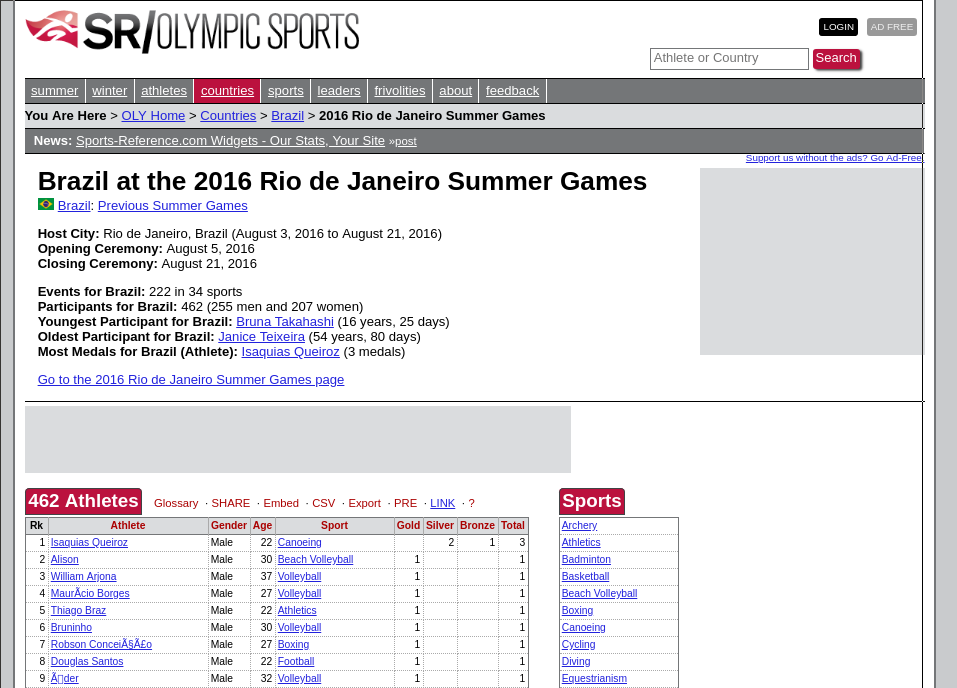

Cómo Python está Ayudando al Periodismo en Brasil
Turicas aka Álvaro Justen
PyCon Charlas 2018
11 de mayo de 2018 - Cleveland, OH, EEUU
$ whoami
Turicas, mucho gusto =)
¡Síganme los buenos!
{twitter,
github,
youtube,
slideshare,
instagram}
/turicas
turicas@pythonic.cafe
Diapositivas en:
bit.ly/turicas-pycon2018

escoladedados.org

impacto.jor.br
Brasil.IO
Datos públicos brasileños accesibles

pythonic.cafe
youtube.com/c/PythonicCafe
Software Libre & Python
Desde 2004/2005

Periodismo de Datos:
La Jornada

Data Pipeline: schoolofdata.org/methodology
generonumero.media

Vea la edición "Mulheres na Política"

Vea la edición "Mulheres na Política II"

Vea la edición "Espaço Público"
Calle: Sustantivo (aún) Masculino

youtu.be/7yQ8U2tFFq4

apublica.org

Acceda a la materia

correio24horas.com.br

Acceda a la materia

theintercept.com/brasil
Acceda a la materia

Acceda a la materia
Acceda a la materia

Acceda a la materia
Periodistas programadores!
(3.000+ estudiantes)

Problema: No son accesibles :(
El mayor tiempo se gasta en:

Trabajando con Datos Públicos (en GIFs)


“ El nivel de accesibilidad de un dado es un filtro sobre quién podrá utilizarlo. ”(nosotros, programadores, tenemos privilegios)
Ejempo: Tablas en HTML
(codificación en vivo)
Ejempo: Tablas en PDF

(codificación en vivo)

github/turicas/rows
pip install rows

twitter.com/turicas/status/943176715672711168
twitter.com/turicas/status/959120200976224262

twitter.com/turicas/status/960678777096425472
Brasil.IO
Datos públicos brasileños accesibles

github/turicas/brasil.io
brasil.io/api/datasets

https://2018.pythonbrasil.org.br/